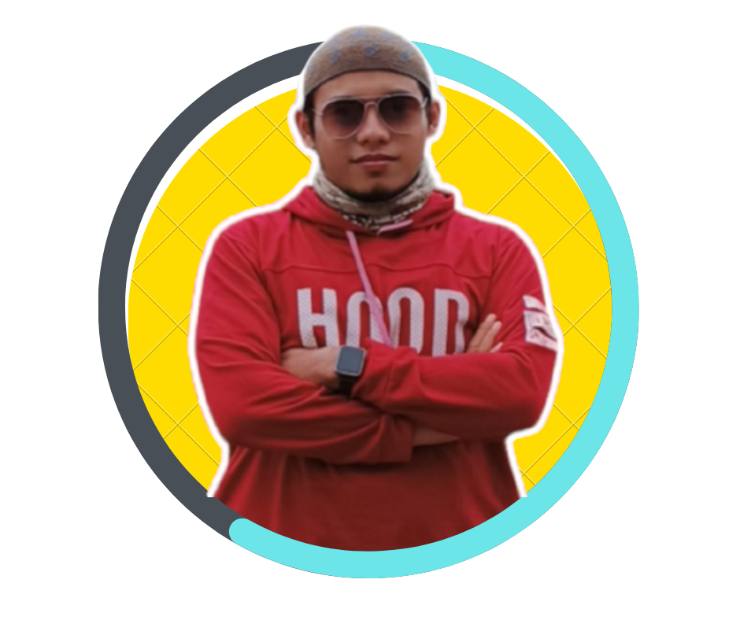

Tarona Putra, S.Pd.I.,M.Pd
Guru & Pengembang Media Pembelajaran Digital PAI SD
6 Kelas
Kelas 1 hingga Kelas 6
48+ Modul
Bahan & Perangkat Ajar
Interactive
Integrasi G-Drive & Video
Website ini dikembangkan sebagai sarana edukasi berbasis digital untuk mempermudah siswa SD dalam mempelajari Pendidikan Agama Islam dan Budi Pekerti secara menyenangkan, terstruktur, dan interaktif.
- Visi: Mewujudkan pembelajaran PAI SD yang modern, menarik, dan mudah diakses dari mana saja.
- Misi: Menyediakan materi Kurikulum Merdeka yang dikemas dengan visual anak-anak serta perangkat ajar yang terintegrasi bagi para guru PAI.
- Tampilan grid interaktif responsif (Desktop & Mobile).
- Penyimpanan materi langsung di Google Drive & video YouTube tanpa iklan luar.
- Sistem kuis interaktif (LMS) yang dapat diakses secara langsung.